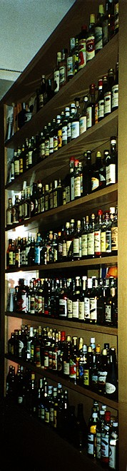

 This South American restaurant could turn out to be the best recommendation I get all week. The name is the wrong way around, though - I'm having some ron first while I wait for my comida.
It's busy so I have to eat at the bar, from where I am admiring the unfeasibly large rum collection. I can't be bothered to count them, but there are about 150 different bottles of rum, with spares for most of them. I wonder which one is contributing the my gorgeous cocktail.
Just like cafe Sul Palco in Luxembourg, this bar-restaurant looks as if it were a Habitat shop in a previous life: light pine everywhere and stylish everything, including most of the other customers.
My food is a spicy vegetable and squid rice dish, with lots of lime. It is fantastic, and just the kind of thing that I try to cook myself. The guy I'm with has just told me about a friend of his who eats here most days, and has asked how much a monthly ticket for the restaurant would cost!
(I had to come back, two days later, just to try the cocktails again. It's only 8.30 p.m. this time and much quieter, although I would rather sit at the bar, still, because it's a good bar. The Caipirinha is absolutely gorgeous, although a bit too sweet, unlike the Caipirissima, which is fantastic. I shall have to see if I can reproduce this in the safety of my own home.)
Back again, another two days later, it's a quiet night again - probably because we're early. This time I had a beef dish because it is marked sehr, sehr scharf - very, very hot - on the menu, and I was curious to see what that means around here. On UK curry terms it turns out to be a good notch down from a madras, so I guess it would qualify as 'hot', but nothing else. Anyway, I think that my beef is just right, with spicy rice, beans and a couple of unidentifiable side dishes.
The presentation has turned out to be much more poncy for the desert - my dark chocolate mousse (gorgeous) is on a pointlessly big plate with non-random sprinkles of icing sugar, and a puddle of colourful but unidentified sauce. There is even a sprig on mint, which I hate. Anyway, that was another good meal here, and possibly not the last.